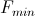
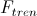
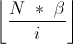
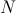

Umjetni imunološki sustav
PAŽNJA!
Biblioteka JFreeChart koja se koristi je malo veća te stoga i učitavanje appleta prvi puta traje malo duže. Budite strpljivi.
Također morate imati instaliran Java plugin za Vaš preglednik kako biste mogli pokrenuti program.
Evolucijski algoritmi
Pojašnjenje opcija
- Funkcija
-
funkcija čiji se ekstrem traži. Neke česte funkcije su
- x^y - x sa eksponentom y gdje je y neki broj
- sin(x) - sinus od x
- cos(x) - kosinus od x
- exp(x) - baza e sa eksponentom x
- Sjeme
-
Cijeli broj koji se koristi kao sjeme za generator nasumičnih brojeva
- Od - Do
-
Granice domene funkcije. Određuje raspon koji se pretražuje i iscrtava
- Broj točaka
-
Broj koji kaže koliko će se točaka izračunati radi crtanja funkcije. Veći broj
točaka, funkcija je bolje iscrtana
- Traži
-
Određuje tražimo li minimum ili maksimum funkcije
- Broj antitijela
-
Broj antitijela koji pretražuju prostor
- Broj bitova
-
Određuje koliko bitova se koristi po varijabli za kodiranje vrijednosti
- Vrsta mutacije
-
Određuje koja se mutacija koristi za unošenje varijacija u populaciju
- Nema - ne koristi mutaciju
-
Jedan bit - na proizvoljnom mjestu u rasponu [0, 2 *
broj bitova]
se invertira bit
-
Jedan bit varijable - na proizvoljnom mjestu u rasponu [0,
broj bitova]
se invertira bit za svaku pojedinu varijablu
Distribuirana - invertira sve bitove kojima je vjerojatnost
invertiranja manja od vjerojatnosti dobivene izrazom
gdje su
-
 -
konstanta ro
-
konstanta ro
-
 -
najmanji faktor dobrote u trenutnoj populaciji antitijela
-
 -
faktor dobrote antitijela koje mutira
- Ro
-
Konstanta koja određuje kako brzo funkcija razdiobe teži u 0 kod
distribuirane mutacije
.
Veća vrijednost, manje bitova će biti invertirano.
- Algoritam
-
Određuje koji se algoritam koristi.
- Broj klonova
-
Određuje koliko klonova nastaje od pojedinog antitijela kod
Simple AIS algoritma
- Beta
-
Najbolje antitijelo ima beta *
broj antitijela
dok se ta količina linearno spušta do beta kod
CLONALG algoritma.
(u formulama oznaka
 )
)
- Broj novih
-
Određuje koliko novih antitijela dolazi u populaciju kod
CLONALG algoritma
- Broj generacija
-
Određuje nakon koliko generacija se prestaje sa evoluiranjem populacije čestica
Objašnjenja pojedinih algoritama
Simple AIS
- Pseudokod
-
Inicijaliziraj
Dok nije kraj
Dodaj sva antitijela u privremenu populaciju
Za svako antitijelo
Za i = 1 do broj klonova
Stvori klona
Mutiraj klona
Dodaj klona u privremenu populaciju
Sortiraj privremenu populaciju
Uzmi najboljih
antitijela u novu populaciju
-
CLONGALG
- Pseudokod
-
Inicijaliziraj
Dok nije kraj
Dodaj sva antitijela u privremenu populaciju
Za svako antitijelo
Za i = 1 do broj klonova
Stvori klona
Mutiraj klona
Dodaj klona u privremenu populaciju
Dodaj X novih antitijela
Sortiraj privremenu populaciju
Uzmi najboljih
antitijela u novu populaciju
-
- Broj klonova
-
-
Broj klonova se računa po formuli

gdje su
-
-
konstanta beta
-
 -
broj antitijela
-
-
trenutna pozicija antitijela u uzlazno sortiranoj populaciji
po faktoru dobrote počevši od pozicije 1
Korišteni alati otvorenog koda